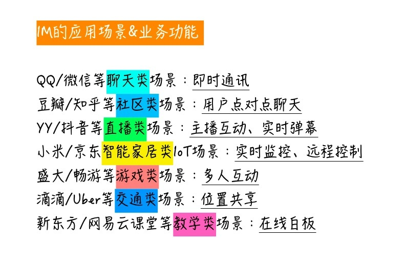
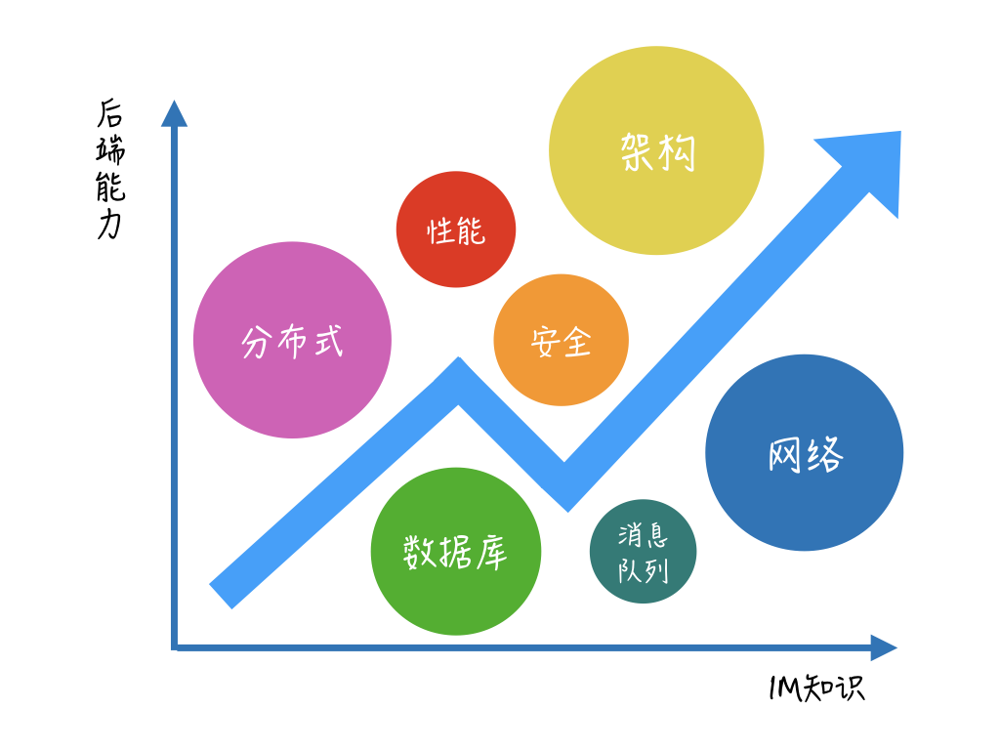

- 00 开篇词 搞懂“实时交互”的IM技术，将会有什么新机遇？.md.html
- 01 架构与特性：一个完整的IM系统是怎样的？.md.html
- 02 消息收发架构：为你的App，加上实时通信功能.md.html
- 03 轮询与长连接：如何解决消息的实时到达问题？.md.html
- 04 ACK机制：如何保证消息的可靠投递？.md.html
- 05 消息序号生成器：如何保证你的消息不会乱序？.md.html
- 06 HttpDNS和TLS：你的消息聊天真的安全吗？.md.html
- 07 分布式锁和原子性：你看到的未读消息提醒是真的吗？.md.html
- 08 智能心跳机制：解决网络的不确定性.md.html
- 09 分布式一致性：让你的消息支持多终端漫游.md.html
- 10 自动智能扩缩容：直播互动场景中峰值流量的应对.md.html
- 11 期中实战：动手写一个简易版的IM系统.md.html
- 12 服务高可用：保证核心链路稳定性的流控和熔断机制.md.html
- 13 HTTP Tunnel：复杂网络下消息通道高可用设计的思考.md.html
- 14 分片上传：如何让你的图片、音视频消息发送得更快？.md.html
- 15 CDN加速：如何让你的图片、视频、语音消息浏览播放不卡？.md.html
- 16 APNs：聊一聊第三方系统级消息通道的事.md.html
- 17 Cache：多级缓存架构在消息系统中的应用.md.html
- 18 Docker容器化：说一说IM系统中模块水平扩展的实现.md.html
- 19 端到端Trace：消息收发链路的监控体系搭建.md.html
- 20 存储和并发：万人群聊系统设计中的几个难点.md.html
- 21 期末实战：为你的简约版IM系统，加上功能.md.html
- 22 答疑解惑：不同即时消息场景下架构实现上的异同.md.html
- 结束语 真正的高贵，不是优于别人，而是优于过去的自己.md.html
- 捐赠
00 开篇词 搞懂“实时交互”的IM技术，将会有什么新机遇？
你好，我是袁武林。我来自新浪微博，目前在微博主要负责消息箱和直播互动相关的业务。接下来的一段时间，我会给你带来一个即时消息技术方面的专栏课程。
你可能会很好奇，为什么是来自微博的技术人来讲这个课程，微博会用到IM的技术吗？
在我回答之前，先请你思考一个问题：
除了QQ和微信，你知道还有什么App会用到即时（实时）消息技术吗？
其实，除了QQ和微信外，陌陌、抖音等直播业务为主的App也都深度用到了IM相关的技术。
比如在线学习软件中的“实时在线白板”，导航打车软件中的“实时位置共享”，以及和我们生活密切相关的智能家居的“远程控制”，也都会通过IM技术来提升人和人、人和物的实时互动性。
我觉得可以这么理解：包括聊天、直播、在线客服、物联网等这些业务领域在内，所有需要“实时互动”“高实时性”的场景，都需要、也应该用到IM技术。
微博因为其多重的业务需求，在许多业务中都应用到了IM技术，目前除了我负责的消息箱和直播互动业务外，还有其他业务也逐渐来通过我们的IM通用服务，提升各自业务的用户体验。

为什么这么多场景都用到了IM技术呢，IM的技术究竟是什么呢？
所以，在正式开始讲解技术之前，我想先从应用场景的角度，带你了解一下IM技术是什么，它为互联网带来了哪些巨大变革，以及自身蕴含着怎样的价值。
什么是IM系统？
我们不妨先看一段旧闻：
2014年Facebook以190亿美元的价格，收购了当时火爆的即时通信工具WhatsApp，而此时WhatsApp仅有50名员工。
是的，也就是说这50名员工人均创造了3.8亿美元的价值。这里，我们不去讨论当时谷歌和Facebook为争抢WhatsApp发起的价格战，从而推动这笔交易水涨船高的合理性，从另一个侧面我们看到的是：依托于IM技术的社交软件，在完成了“连接人与人”的使命后，体现出的巨大价值。
同样的价值体现也发生在国内。1996年，几名以色列大学生发明的即时聊天软件ICQ一时间风靡全球，3年后的深圳，它的效仿者在中国悄然出现，通过熟人关系的快速构建，在一票基于陌生人关系的网络聊天室中脱颖而出，逐渐成为国内社交网络的巨头。
那时候这个聊天工具还叫OICQ，后来更名为QQ，说到这，大家应该知道我说的是哪家公司了，没错，这家公司叫腾讯。在之后的数年里，腾讯正是通过不断优化升级IM相关的功能和架构，凭借QQ和微信这两大IM工具，牢牢控制了强关系领域的社交圈。
由此可见，IM技术作为互联网实时互动场景的底层架构，在整个互动生态圈的价值所在。
随着互联网的发展，人们对于实时互动的要求越来越高。于是，IM技术不止应用于QQ、微信这样的面向聊天的软件，它其实有着宽广的应用场景和足够有想象力的前景。甚至在不知不觉之间，IM系统已经根植于我们的互联网生活中，成为各大App必不可少的模块。
除了我在前面图中列出的业务之外，如果你希望在自己的App里加上实时聊天或者弹幕的功能，通过IM云服务商提供的SDK就能快速实现（当然如果需求比较简单，你也可以自己动手来实现）。
比如，在极客时间App中，我们可以加上一个支持大家点对点聊天的功能，或者增加针对某一门课程的独立聊天室。
例子太多，我就不一一列举了。其实我想说的是：IM并不是一门仅限于聊天、社交的技术，实际上它已经广泛运用于我们身边形形色色的软件中。
随着5G等高速移动网络技术的快速推进，网络速度和稳定性大幅提升、网络流量费用降低，势必今后还会有越来越多的软件依托即时消息的优势理念加入到IM的大家庭中来，毕竟谁不希望所有互动都能“实时触达”而且“安全可靠”呢？
应用场景不同，适用的解决方案也不同
另外，从技术的角度来看，IM技术在后端的实现上并不是孤立存在的，实际上，我们可以认为IM技术是众多前后端技术的一个综合体，只不过和其它业务相比，由于自身使用场景在某些技术点上有更多侧重。

在整个IM系统的实现上深度用到了网络、数据库、缓存、加密、消息队列等后端必备知识。架构设计中也在大规模分布式、高并发、一致性架构设计等方面有众多成熟的解决方案。
所以我们可以认为，在学习和实践IM技术的过程中，也可以系统化提升你在这些方面的整体能力。
我第一次接触IM系统并不是和“人”相关的场景，当时就职的公司做的是一个类似“物联网”的油罐车实时追踪控制系统，一是通过GPS实时跟踪油罐车的位置，判断是否按常规路线行进，一是在油罐车到达目的地之后，通过系统远程控制开锁。
所以，这里的交互实际是“车”和“系统”的互动，当然这个系统实现上并没有多大的技术挑战，除了GPS的漂移纠偏带来了一些小小的困扰，最大的挑战莫过于调试的时候需要现场跟车调试多地奔波。
再后来，由于工作的变动，我逐渐接触到IM系统中一些高并发的业务场景，千万级实时在线用户，百亿级消息下推量，突发热点的直线峰值等。一步一步地踩坑和重构，除了感受到压力之外，对IM系统也有了更深层次的理解。
记得几年前，由于消息图片服务稳定性不好，图片消息的渲染比较慢，用户体验不好。
而且，由于图片流和文本流在同一个TCP通道，TCP的阻塞有时还会影响文本消息的收发。
所以后来我们对通道进行了一次拆分，把图片、文件等二进制流拆到一个独立通道，核心通道只推缩略图流，大幅减轻了通道压力，提升了核心链路的稳定性。
同时，独立的通道也缩短了客户端到文件流的链路，这样也提升了图片的访问性能。
但后来视频功能上线后，我们发现视频的PSR1（1秒内播放成功率）比较低，原因是视频文件一般比较大，为避免通道阻塞，不会通过消息收发的核心通道来推送。
所以之前的策略是：通过消息通道只下推视频的ID，用户真正点击播放时才从服务端下载，这种模式虽然解决了通道阻塞的问题，但“播放时再下载”容易出现卡顿的情况。
因此，针对视频类消息，我们增加了一个notify-pull模式，当客户端收到一条视频类消息的通知时，会再向服务器发起一个短连接的拉取请求，缓冲前N秒的数据。
这样等用户点击播放时，基本就能秒播了，较大地提升了视频消息播放的PSR1（1秒内播放成功率）。
因此，我们要打造一套“实时、安全、稳定”的IM系统，我们需要深入思考很多个地方，尤其是作为整个实时互动业务的基础设施，扩展性、可用性、安全性等方面都需要有较高的保障。
比如下面几种情况。
- 某个明星忽然开直播了，在线用户数和消息数瞬间暴涨，该如何应对？
- 弱网情况下，怎么解决消息收发失败的问题，提升消息到达率？
- 如何避免敏感聊天内容由于网络劫持而泄露？
诸如此类的问题可能有很多种解决方案，但是对于不同的场景适用的方案可能也不一样。
因此在随后的内容里，我希望能够先系统化地带着你了解一下，一套基础的IM系统的整体构成，以及不同业务场景下可能存在的问题点和瓶颈点。
然后，我会从经验角度出发来和你一起深入探讨这些问题，并在这一过程中尽量遵循解决问题的3W原则（What、Why、How）。从问题现象出发，结构化分析问题的本质原因，并讨论多种解决问题的优劣和选择。
我希望能通过这样的方式，不仅让你对IM的核心组成有一个整体的认识，而且能够在各个瓶颈点的分析和后续的实践中，形成较为深刻的思考和实践能力，逐渐完善自身关于IM系统架构的知识网络。
课程设置
我们的课程分成三个模块，基本思路是：先从整体了解、再细化到每个垂直领域去了解它们有什么不同，进而关注到一些实现上的关键技术点、然后再回归到整体层面。
基础篇
本模块我们会开始学习一个即时消息系统的基础结构，以及如何为你的App加入即时消息的模块。并且，我们会从即时消息系统所适用的业务场景需求出发，学习IM有别于其他业务系统的特性功能，比如实时性、安全性，以及这些功能的具体实现。
场景篇
在场景篇里，我会挑选即时消息技术的几个具体应用场景，这些场景相对个性化，而且在某些特性的技术实现上有一定挑战，我会针对这些场景比较核心的重点和难点来进行拆分讲解。比如，消息的多终端漫游功能的实现重点，以及直播互动场景中峰值流量的应对等等。
进阶篇
进阶篇在基础篇的即时消息的基础能力之上，介绍了相对更高级一些的功能，比如和苹果的推送服务对接。另外也更多关注于即时消息场景里在海量消息、高并发、服务高可用、服务保障等方面的优化实践，这部分内容具备较强的通用性，适用于大部分后端服务架构，从事后端服务开发设计的同学应该都会有所收获。
我希望能通过这个专栏，把这些年积累到的一些一线的实战经验进行梳理和沉淀，让感兴趣的小伙伴从中真正了解到，在超大用户规模的场景下，我们的即时消息系统经常会碰到的一些问题和容易出现瓶颈的环节，以及最终如何通过技术的升级和架构上的优化，来一一化解。
另外我希望你在掌握即时消息技术的同时，还能从这些实际上适用于大部分互联网后端业务的技术点和架构思想中，能体会到技术的互通性，通过思考和沉淀，形成自己的一套后端架构知识体系，并能实际运用到自己的业务或者系统中去。
最后，给你留一个思考题吧，除了前面我提到的聊天、直播互动、物联网等这些场景，你生活中接触到的还有哪些场景，也比较适合用到即时消息技术呢？
你可以给我留言，我们一起讨论。
© 2019 - 2023 Liangliang Lee. Powered by gin and hexo-theme-book.